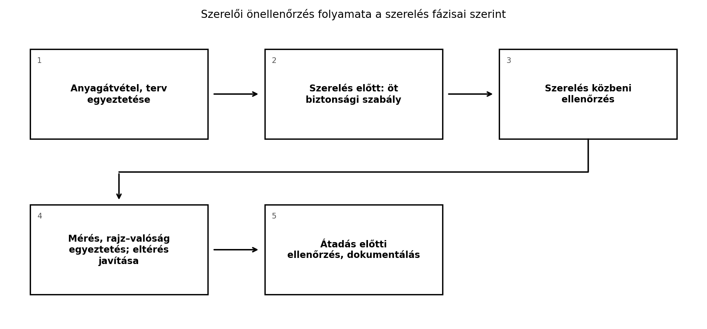

Képzeld el, hogy elkészült egy lakásfelújítás villanyszerelése. A megrendelő kifizeti a számlát, a lakás elkészül, majd három hónap múlva visszahív a megrendelő: „a konvektor bekapcsolásakor lekapcsol a kismegszakító”, vagy „szikrázott a dugaszolóaljzat”. Ha a hibát a szerelőnek garanciában kell javítania, akkor az eredeti nyereség nagy részét felemésztheti a visszajárás, a bontás, az anyag és az utazás költsége. Ha ugyanezt a hibát az átadás előtti ellenőrzésen találja meg, akkor csak a műhelyben javít, olcsón és gyorsan.
A minőségbiztosítás ezért nem irodai papírmunka, hanem a szerelői túlélés eszköze: az ellenőrzést akkor végzed el, amikor a javítás még olcsó, nem akkor, amikor már garanciális kár lett belőle. Ebben az alfejezetben azt tanulod meg, hogyan építs fel egy egyszerű szerelői ellenőrzőlistát, hogyan becsüld meg a hibák költségét, és hogyan dokumentáld az önellenőrzésedet úgy, hogy az később a garanciális vitában is védjen.
Vegyünk egy tipikus példát: egy új lakáselosztó szerelése közben a szerelő rosszul húzza meg az egyik sorkapocs csavarját. A hiba különböző időpontokban más költséggel jár.
A lecke egyszerű: a hiba minél később derül ki, annál drágább. A minőségbiztosítás célja, hogy a hibákat a folyamat minél korábbi szakaszára hozza előre.
Definíció. A minőség egy termék vagy szolgáltatás jellemzőinek azon összessége, amelyek kielégítik a megrendelő és a műszaki előírások elvárásait. Villanyszerelésben a minőség nemcsak azt jelenti, hogy „működik”, hanem azt is, hogy szabványos, biztonságos, tartós, dokumentált és esztétikus.
Definíció. A minőségbiztosítás olyan szervezett tevékenység, amely bizalmat ad abban, hogy a termék vagy szolgáltatás megfelel a követelményeknek. A minőségbiztosítás nem mérés, hanem egy rendszer: előre megmondja, mit kell ellenőrizni, mikor, kinek, mivel, és mi legyen az elfogadási feltétel.
Szabvány. A leggyakrabban hivatkozott minőségirányítási szabvány az MSZ EN ISO 9001 (ISO 9001), amely a szervezeti folyamatok szabályozásáról szól. A 9001-es tanúsítás azt jelenti, hogy a cégnek van minőségirányítási rendszere, nem azt, hogy minden terméke hibátlan. A villanyszerelő számára nem a tanúsítás a lényeg, hanem a mögötte lévő gondolkodásmód: tervezd meg, dokumentáld, ellenőrizd, javítsd, és tanulj a hibából. A konkrét szabványszám, kiadás és követelmény az aktuális kiadványban ellenőrizendő.
Összefüggés. A minőségirányítás szokásos modellje a PDCA-ciklus, azaz:
Ezt a ciklust egyetlen szerelő is tudja használni: egy lakáselosztó szerelésénél nem szükséges bonyolult minőségügyi osztály, elég egy ellenőrző lista és egy lelkiismeretes kör.
A villanyszerelés nem egyetlen művelet, hanem több fázis. Minden fázisnak más a tipikus hibája, ezért az ellenőrző lista fázisonként épüljön fel.
Definíció. A szerelői ellenőrző lista olyan rövid, tételes dokumentum, amely felsorolja az adott munkafázisban elvégzendő ellenőrzéseket, azok elfogadási feltételét és az eredményt.
Az alábbi lista egy fiktív tanműhelyi példa; éles munkában a lista bővíthető, de a logikája ugyanaz:
Példa. Egy lakáselosztó cseréjénél a szerelő a lista 3. pontjában (szerelés közben, munkafázisként) ellenőrzi a nullavezető sorkapcsát. Laza a kötés. A lista segít abban, hogy ne ugorja át ezt a lépést pusztán azért, mert „úgyis működik”. A hiba javítása itt még percek kérdése.
A 3. pont („szerelés közben”) leggyakoribb hibáit egy csavaros sorkapocs metszetén mutatja az alábbi ábra. Az (a) helyes kötésnél a csupasz vezető teljes hosszában a szorítólap alatt van, a szigetelés éppen a kapocs nyílásáig ér. A (b) túl hosszú csupaszolásnál csupasz réz marad a kapcson kívül, a (c) túl rövid csupaszolásnál a szigetelés kerül a szorítás alá, a (d) sodrott (hajlékony) érnél érvéghüvely nélkül a szálak szétállnak.
A (c) hiba a legalattomosabb: a kötés elsőre „tart”, a mérés sem jelez, de terhelés alatt a műanyag enged, a kötés lazul és melegszik. Ezért a csupaszolási hosszt a sablonhoz mérjük, és minden kötés után húzópróbát végzünk. A HTML-kiadásban a négy esetet egyenként lapozhatod, a hiba okával és javításával.
Definíció. A hibaköltség mindaz a költség, amely egy hiba keletkezése, észlelése és javítása miatt keletkezik. Két nagy csoportja van:
A garancia szempontjából a külső hibaköltség a veszélyesebb. A garancia nem azt jelenti, hogy a szerelő minden hibát ingyen javít, hanem azt, hogy a szerződésben vagy a jogszabályban meghatározott ideig és feltételekkel helytáll a munkájáért. A pontos garanciális idő és a szavatossági szabály jogszabálytól és szerződéstől függ: (ellenőrizendő: aktuális fogyasztói és vállalkozási szerződéses szabályok).
A hibaköltség becslésére elég egy egyszerű sémát használni.
Számítás. Tegyük fel, hogy egy lakáselosztóban egy rossz csatlakozás miatt a szerelőt visszahívják.
Összesen: 26 000 Ft, és ehhez jön a hírnévvesztés, a megrendelő idegeskedése és az a kieső idő, amit más munkán lehetett volna tölteni. Ha ugyanezt a hibát az átadás előtt veszi észre, akkor a javítás anyag nélkül, esetleg anyaggal együtt is csak néhány ezer forint.
A számok és az óradíjak tanulási példák, nem ajánlott vállalkozói árak.
Az önellenőrzés nem egyszerűen „ránézek, hogy jó-e”, hanem mérhető, dokumentálható lépéssor. A cél nem az, hogy mindent megmérjünk, hanem az, hogy a kritikus pontokat ellenőrizzük, és azokról bizonyítékunk maradjon.
Alapszabály. A szerelői önellenőrzésnek legalább három pillért kell érintenie: rajz–valóság–mérés.
A mérési eredményeket mindig dokumentálni kell. A dokumentálás minimális adatai:
Ha később vita van arról, hogy a munka hibás volt-e, a jegyzőkönyv a szerelő védelme. Emellett a hibaköltséget is csökkenti, mert nem kell újra megkeresni, mit mértél korábban.
Az önellenőrzés eszközei. A „valóság” és a „mérés” pillérhez néhány egyszerű eszköz kell; ezeket az alábbi ábra számozva mutatja. Az 1 szigetelt (1000 V, kettős háromszög jelölésű) nyomatékcsavarhúzót a kapocs gyártó által előírt nyomatékára állítjuk – a „jó erősen” nem ellenőrizhető. A 2 csupaszolási sablon a készülék oldalán jelölt hossz: ehhez vetjük össze a lecsupaszolt érvéget. A 3 húzópróbát kézzel, tengelyirányban végezzük, a vezető nem mozdulhat el. A 4 lámpa és vizsgálótükör a takart kapcsok és a vezetékvezetés szemrevételezéséhez kell. Az 5 installációs vizsgálóműszerrel (MSZ EN 61557 szerinti, ellenőrizendő) a folytonosságot és a szigetelési ellenállást feszültségmentes állapotban mérjük; típusa és gyári száma a jegyzőkönyvbe kerül. A 6 ellenőrző lista és a takarás előtti fotó a bizonyíték.
Figyeld meg, hogy az eszközök fele nem mérőműszer: a mechanikai kötés minőségét (nyomaték, csupaszolási hossz, húzópróba) a szerelés közben, kézzel ellenőrizzük, mert a műszer egy laza kötést hideg állapotban gyakran nem mutat ki. A HTML-kiadásban az eszközökre mutatva megjelenik, melyik pillérhez tartozik és mire figyelj.
Szabály. A villamos berendezések ellenőrzése és felülvizsgálata során a méréseket a hatályos szabványok szerint kell elvégezni (például védővezető-folytonosság, szigetelési ellenállás, hurokimpedancia, FI-vizsgálat). Az első ellenőrzés vizsgálatait és határértékeit az MSZ HD 60364-6, a hozzájuk használt mérőműszerek követelményeit az MSZ EN 61557 sorozat adja (ellenőrizendő: aktuális kiadások és határértékek).
Cél. Készíts egyszerű, saját munkádhoz használható ellenőrző listát, és gyakorold a dokumentált önellenőrzést.
Eszközök és anyagok: papír vagy táblázatkezelő, toll, az adott szerelési feladat terve, mérőműszer.
Biztonsági korlát. A feladat tanműhelyi (törpefeszültségű) környezetre vagy jogosult oktató felügyeletére vonatkozik; hálózati feszültségen önállóan ne végezd.
Az alfejezet későbbi részében ezt a listát a gyakorlati feladatban is használni fogod.

Egy tanuló egy felújított lakásban dolgozik. A terv szerint a konyhai sütő külön áramkört kap 2,5 mm²-es rézvezetékkel és B16-os kismegszakítóval. A szerelés során azonban kifogy a megfelelő kábelből, ezért a szerelő 1,5 mm²-es vezetéket húz be, arra hivatkozva, hogy „a sütő úgysem megy teljes terhelésen”. Az önellenőrzéskor a szerelő megnézi a rajzot, és látja, hogy a vezeték keresztmetszete nem egyezik a tervvel. A B16-os kismegszakítóval az 1,5 mm²-es vezeték terhelhetősége bizonyos szerelési feltételek mellett nem elegendő, ezért a szerelés nem felel meg a tervnek és a vezetékvédelem követelményének (a pontos terhelhetőségi értékek a szerelési módtól függnek: ellenőrizendő az aktuális szabvány). A hibát még a falazás előtt javítják, ezért a költség csak a kábelcsere. Ha ez a hiba az átadás után derül ki, a falfelületet is meg kell bontani, és a költség sokszorosára nő.
A tanulság: a rajz–valóság–mérés hármas nem formalitás, hanem a legolcsóbb hibamegelőzés. A tervtől való eltérést nem szabad csendben megvalósítani, mert a későbbi ellenőrzés, felújítás vagy bővítés a tervet tekinti kiindulási pontnak.
1. feladat (A)
Sorold fel a szerelői önellenőrzés három pillérét, és mindegyikhez adj
egy konkrét példát!
2. feladat (A)
Igaz vagy hamis? Indokold!
a) A minőségbiztosítás lényege, hogy minden hibát a vásárló
észleljen.
b) A hibaköltség lehet belső és külső.
c) A szerelői ellenőrző listát csak a művezető készítheti el.
3. feladat (B)
Egy hibás érvéghüvelypréselés miatt a kötés üzem közben melegszik. Az
átadás utáni javítás adatai: kiszállás 1,5 óra 7 000 Ft/óra; hibakeresés
és bontás 2 óra 6 500 Ft/óra; anyag 3 500 Ft; újraellenőrzés 5 000 Ft.
Becsüld meg a külső hibaköltséget! Mennyi lett volna a költség, ha az
átadás előtti önellenőrzésen veszik észre, és a javítás 15 percet vesz
igénybe?
4. feladat (B)
Tervezz egyszerű ellenőrző listát öt sorból egy dugaszoló aljzat
bekötésének szerelés közbeni fázisához! Minden sorhoz jelöld,
hogy szemrevételezés, mérés vagy rajz-egyezés-e.
5. feladat (C)
Egy szerelés átadás előtt van. A szerelő nem találja a
hurokimpedancia-mérés jegyzőkönyvét. Milyen hibaköltség-növelő
következményei lehetnek ennek, és hogyan előzhető meg?
6. feladat (D)
Használd a gyakorlati útmutatóban bemutatott listakészítő módszert egy
világítási váltókapcsolás ellenőrzésére. Írd le, milyen
eredményt írnál a listába, ha a mérés azt mutatja, hogy az egyik
kapcsoló nem működik, és a kapcsoló közös kapcsára (L) nem a fázis-,
hanem az egyik váltóvezeték van kötve.
1. feladat (A)
A három pillér: rajz, valóság, mérés. Például
rajz-egyezés: a kapcsolási rajzon szereplő nyomvonalak és a tényleges
bekötés azonosak. Valóság: a csavarkötések meghúzottak, a szigetelés nem
sérült. Mérés: a védővezető folytonossága megfelelő, a szigetelési
ellenállás a megadott határ felett van.
2. feladat (A)
a) Hamis. A minőségbiztosítás célja, hogy a hibákat a lehető
legkorábban, lehetőleg a cégen belül tárja fel.
b) Igaz. A belső hibaköltség átadás előtt, a külső hibaköltség átadás
után jelentkezik.
c) Hamis. A szerelői ellenőrző listát maga a szerelő is elkészítheti;
éppen ez a szemlélet lényege.
3. feladat (B)
Külső hibaköltség:
Ha az átadás előtt, 15 perc alatt javítják:
anyag és külön kiszállás nélkül. A különbség tehát nagyon nagy, ezért
éri meg az önellenőrzés.
4. feladat (B)
Például:
1. A fázis barna vezeték az L kapocsba van bekötve.
(szemrevételezés)
2. A kék nulla az N kapocsba kerül, a zöld-sárga védővezető a PE
kapocsba. (szemrevételezés)
3. A csavarok meg vannak húzva, a vezeték nem mozog.
(szemrevételezés)
4. A kapcsolási rajzon szereplő jelölés egyezik a valósággal.
(rajz-egyezés)
5. A védővezető folytonossága mérőműszerrel ellenőrizve megfelelő.
(mérés)
5. feladat (C)
Ha nincs jegyzőkönyv, akkor az átadónak és a megrendelőnek nincs
bizonyítéka arról, hogy a védelmi mérést elvégezték. Ez garanciális
vitában hátrány, a hatósági felülvizsgálatnál hiányosság, és
előfordulhat, hogy a mérést újra el kell végezni. Megelőzés: a mérést a
helyszínen, a mérési jegyzőkönyvet azonnal ki kell tölteni, dátummal,
aláírással, műszeradatokkal; a jegyzőkönyvet a dokumentációval együtt
tárolni, és másolatot a megrendelőnek is adni.
6. feladat (D)
Egy váltókapcsolásnál a lista szerint ellenőrzöd: a kapcsolási rajz és a
huzalozás egyezését, a kapcsolók kapocsbekötését, a fázisvezető helyét,
a váltóvezetékek párját, a lámpa működését, a védővezető folytonosságát.
Ha a mérés azt mutatja, hogy az egyik kapcsoló nem működik, és a
kapcsoló közös kapcsára (L) nem a fázis-, hanem az egyik váltóvezeték
van kötve, akkor a listában rögzíted: nem felel meg.
Leírod a hibát: a közös kapocs és egy váltóvezeték fel van cserélve.
(Megjegyzés: a két váltóvezeték egymással való felcserélése nem hiba, a
kapcsolás működik, csak a kapcsolóállás–lámpaállapot hozzárendelés
fordul meg.) Intézkedés: feszültségmentesítés az öt szabály szerint, a
közös kapocs bekötésének javítása, majd működési próba mind a négy
állásban és a lista újra ellenőrzése. A javítás után a lista kimenete:
megfelel.
A minőség a villanyszerelésben azt jelenti, hogy a munka biztonságos, szabványos, tartós, dokumentált és a tervnek megfelelő. A minőségbiztosítás nem papírmunka, hanem annak eszköze, hogy a hibák a lehető legkorábban kiderüljenek, mert a hiba költsége az idő előrehaladtával nő. Az ISO 9001 gondolkodásmódja a PDCA-ciklus: tervezz, hajts végre, ellenőrizz, avatkozz be. A szerelői ellenőrző lista fázisonként sorolja fel a kritikus pontokat, és a rajz–valóság–mérés hármasra épül. A hibaköltséget belső és külső csoportra bontjuk; a külső hibaköltség az átadás után jelentkezik, és sokkal magasabb, mert utazással, bontással, sürgősséggel és bizalomvesztéssel jár. A dokumentált önellenőrzés bizonyíték, garanciális védelmet ad, és előkészíti a későbbi irodai dokumentációt. Továbbvitt eredmény. A minőségbiztosításban használt ellenőrzőlista, dokumentálási igény és hibaköltség-szemlélet közvetlenül hasznosul a(z) Irodai alkalmazások a szakmában alfejezetben, ahol a mérési jegyzőkönyveket, gyártói adatlapokat és szerelési dokumentációkat számítógépes formában kezeljük.